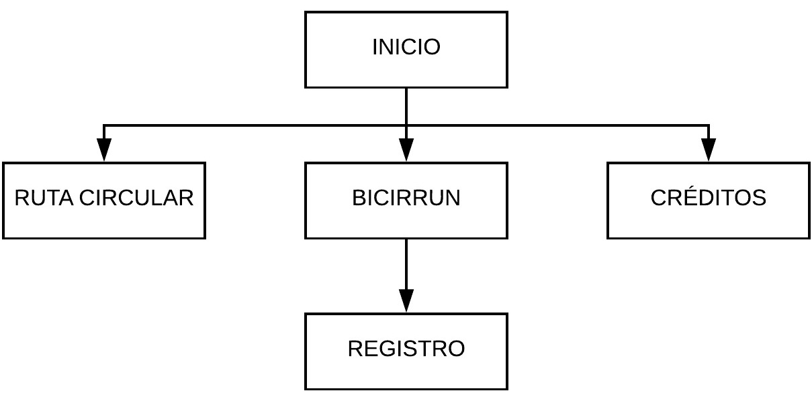

SISTEMA INFORMATIVO DE TRANSPORTE U.N.

En la actualidad las tecnologías de la información y las comunicaciones brindan herramientas que simplifican
y optimizan las actividades cotidianas de la sociedad además brindar acceso a grandes volúmenes de información
tales como conocer el estado el clima, saber las ubicaciones de lugares determinados, realizar trámites bancarios,
conocer el estado de las vías, etc. Es por ello que las políticas globales se han inclinado en incluir a las TIC
dentro del desarrollo económico, social y cultural del mundo y a este contexto no se escapa Colombia, siendo el
programa de las TIC un eje fundamental en las políticas de desarrollo nacional impactando de manera directa en el
desarrollo económico del país, ya que este sector en el último año aportó cerca del 3% del PIB nacional, teniendo
un crecimiento considerable en comparación con años anteriores.
En el marco de desarrollo sostenible y la inclusión de las TIC, la Universidad Nacional de Colombia Sede Bogotá ha
creado una política llamada Plan Integral de Movilidad, en el cual se busca propiciar la movilidad de manera sostenible
dentro del campus universitario con un eje de integración con la ciudad, planteando para ello herramientas tecnológicas
que permitan a la sociedad en general, tener un desplazamiento integral, inteligente y de calidad.
Con base en estas políticas globales, nacionales, distritales y locales buscando solucionar los problemas de centralización
de la información de los sistemas de movilidad al interior del campus, se desarrolló esta herramienta tecnológica
que permite a la comunidad conocer el estado de los servicios en tiempo real.
Desarrolladores:
Sergio Andres Castro Castro
Diego Alejandro Guevara Rocha
Jose Reynaldo Molano Ramírez
Diseñador:
Brahiam Steven Zuica Mesa
Contenido:
Wilson Steven Mora Rivera
Oscar David Rodas Perdomo
Germán Alberto Rojas Galindo
Jonathan Camilo Villota Arias